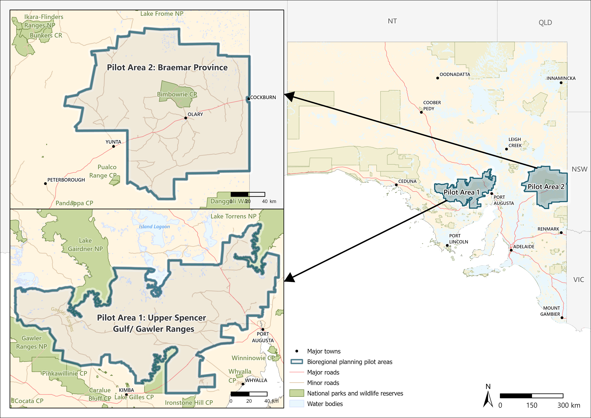

1 Introduction
1.1 Background
1.1.1 Renewable energy transition in South Australia
South Australia is a global leader in the renewable energy transition, having increased the share of net renewable electricity generation from approximately 1% to 74% over just 16 years (DEW2024?). The state has set ambitious targets, including achieving 100% net renewable electricity generation by 2027 and net zero emissions by 2050, supported by a legislated interim goal of reducing net greenhouse gas emissions by at least 60% by 2030.
This transition is underpinned by abundant wind and solar resources. As of 2021–22, 24 operational wind farms supplied more than 44% of the state’s electricity, while six large-scale solar farms, together with world-leading uptake of rooftop solar (installed on approximately 40% of homes), contributed over 24% (DEW2024?; DCCEEW2025?).
To facilitate further expansion, the state has identified key regions as pilot areas for renewable energy development in the semi-arid zone of South Australia, including the Upper Spencer Gulf (in the Gawler Ranges) and the Braemar region (Fig. 1.1).
1.1.2 Ecological impacts of wind and solar energy developments
While renewable energy developments generally have substantially lower environmental impacts than fossil fuel–based energy production (McCombie2016?), poorly sited wind and solar projects can still cause significant ecological threats. In particular, inappropriate siting may lead to habitat loss and degradation in already threatened ecological communities, as well as indirect impacts such as increased human access to previously remote areas (Bennun2021?). Habitat loss and fragmentation are primarily driven by vegetation clearing and the construction of associated infrastructure, including access roads and transmission lines. These disturbances can also facilitate the spread of invasive species and alter fire regimes by transforming vegetation structure (Brooks et al. 2004; Wilcox et al. 2012). For example, through the conversion of native woodlands and shrublands into more flammable grass-dominated systems (Wilcox et al. 2012). In addition to habitat-level impacts, wind and solar facilities can directly affect fauna. Wind turbines pose collision risks to flying species, particularly large soaring birds and bats. Solar panels also attract flying fauna by mimicking water bodies (the “lake effect”), increasing the likelihood of collision with infrastructure (Smallwood 2022; Bennun2021?). Additional risks associated with certain solar technologies include electrocution, burns from concentrated solar flux, and drowning in evaporation ponds (Kagan et al. 2014; Jeal et al. 2019; Bennun2021?).
1.1.3 Bioregional planning for renewable energy development
Bioregional planning is a critical strategic initiative designed to facilitate better, faster decision-making by establishing clear conservation priorities and identifying areas where these development can proceed with minimal environmental harm (West2025?). It is essential for ensuring that the rapid expansion of renewable energy required for net-zero targets does not result in an unacceptable cost to nature, specifically by identifying high-risk areas early to address cumulative impacts that individual project assessments might miss. The framework prioritises siting wind and solar farms on previously modified or degraded landscapes, including agricultural lands, brownfields, and disused industrial sites, while avoiding fragile arid ecosystems and terrain features that concentrate bird or bat movements, such as ridges and important migratory routes. Ultimately, this proactive approach provides greater certainty for stakeholders and developers by streamlining approvals in low-risk areas and fostering outcomes where sustainable energy production and biodiversity restoration can coexist.
LINK TO THE DESCRIPTIONS OF THESE TWO AOI!!!
Braemar Province
The Braemar Province is a major magnetite iron ore region in South Australia, located northeast of Adelaide near the NSW border, containing over 7-8 billion tonnes of defined ore. It is recognized for its potential to produce high-grade iron concentrate for green steel, though development is constrained by limited water and power infrastructure.

Figure 1.1: Location of the two pilot areas used in the species risk assessment framework: Upper Spencer Gulf/Gawler Ranges (400–500 km northwest of Adelaide) and Braemar Province (300–400 km northeast of Adelaide). Both are situated in the semi-arid zone of South Australia. Map produced by the GIS team, DEW (2025).
1.2 Ecosystem Impacts
1.2.1 The semi-arid ecosystem of SA
THIS NEEDS TO BE MORE SPECIFIC
The Upper Spencer Gulf and Braemar Province are dominated by chenopod and samphire shrublands and Acacia shrublands, interspersed with patches of Acacia woodland, Casuarina woodland, and Eucalyptus mallee forest mosaics (envMap).
These semi-arid ecosystems are inherently fragile, with ecological processes strongly constrained by highly variable rainfall in space, time, and intensity. Vegetation regeneration is episodic and typically dependent on prolonged rainfall events, resulting in slow recovery following disturbance.
These shrublands are also largely fire-sensitive (Lambers 2018), and even moderate alterations to fire regimes can substantially affect their composition, distribution, and extent. Disturbances associated with wind and solar energy developments—including vegetation clearing, infrastructure construction, and ongoing site maintenance—have the potential to disrupt these finely balanced processes.
Despite this vulnerability, systematic biodiversity monitoring in chenopod and Acacia shrublands remains extremely limited, with most existing programs focused on the impacts of pastoral production rather than baseline ecosystem dynamics (Recio 2014). Consequently, the ecological effects of large-scale vegetation removal and landscape modification in these systems remain poorly understood but are likely to result in long-term, and potentially irreversible, changes.
R CHILD
1.2.2 Ecological impacts of wind and solar energy developments
Native vegetation removal and ecosystem transformation
Biodiversity in desert shrublands is broadly comparable to that of grasslands, with these systems providing similar ecological functions and services, albeit with lower capacity for flood mitigation and livestock production (Turney and Fthenakis 2011). However, permanent vegetation removal disrupts these functions by preventing the regeneration of native plants within their natural habitats, leading to habitat loss for species that depend on shrubland structure and resources.
Vegetation clearing and ongoing site maintenance associated with wind and solar energy developments often involve the removal or suppression of woody and deep-rooted perennial species. In semi-arid environments, these species play a critical role in maintaining ecosystem stability. Their reduction tends to favour short-lived annual plants, resulting in shifts in community composition, simplified vegetation structure, and altered fire regimes (Facelli and Temby 2002; Weedon and Facelli 2008). Such transformations can have cascading effects on ecosystem processes and services.
Carbon storage
Desert and semi-desert ecosystems cover approximately 22% of the Earth’s land surface and store around 8% of global terrestrial carbon (Meyer2011?). A key feature of these systems is the dominance of stable soil organic carbon (SOC), which accounts for approximately 95% of total carbon storage in shrublands (Meyer2011?). Unlike grasslands—where most root biomass is concentrated in the upper soil layers—desert shrublands allocate a substantial proportion of biomass belowground, contributing to slow carbon turnover and long-term carbon storage. Consequently, the loss of woody and perennial vegetation can reduce carbon sequestration capacity and shift these systems toward more transient, less stable carbon pools. Empirical estimates reflect this contrast, with desert woodlands and shrublands functioning as net carbon sinks, whereas desert grasslands may act as net carbon sources under certain conditions (Taylor et al. 2017).
Invasive grasses and altered fire regimes
Evidence from arid ecosystems, including the Great Basin cold deserts, indicates that disturbance and vegetation clearing can facilitate the invasion of exotic grasses (Wilcox et al. 2012). The replacement of native shrublands with grass-dominated systems substantially alters fire regimes, as invasive grasses typically form continuous, highly flammable fuel layers that increase fuel loads and connectivity. This shift promotes more frequent and intense fires, initiating a positive feedback loop in which fire-tolerant invasive grasses are favoured over native, fire-sensitive shrub species (Brooks et al. 2004; Wilcox et al. 2012). Over time, this process can drive irreversible ecosystem transformation and the loss of native plant communities.
Disturbances associated with wind and solar energy developments—such as vegetation clearing, soil disturbance, and ongoing maintenance—can accelerate these dynamics by creating conditions favourable for invasive species establishment. In addition, localised increases in temperature associated with some solar infrastructure may further exacerbate fire risk in already dry environments (S’anchez-Zapata et al. 2016).
In Australia, buffel grass (Cenchrus ciliaris) exemplifies these processes. Widely introduced as a pasture species, buffel grass has spread extensively across arid and semi-arid regions, where it can alter biodiversity and community composition even at low levels of cover (Smyth et al. 2009). It outcompetes native species for limited water and nutrients and significantly increases fire frequency and intensity (McDonald and McPherson 2011). These changes lead to declines in woody vegetation and reduced regeneration capacity of native flora, with persistence increasingly restricted to species capable of rapid post-fire recruitment (Schlesinger et al. 2013). In this way, invasive grasses act as a key mechanism linking disturbance to long-term ecosystem degradation in semi-arid landscapes.
Soil degradation and wind erosion
Wind is a key abiotic driver of ecosystem dynamics in arid and semi-arid environments. As a result, wind erosion is one of the principal processes underlying land degradation in drylands and represents a major concern for land managers and policymakers worldwide (Duniway et al. 2019; Meyer2011?). The stability of these systems is highly dependent on vegetation cover, which protects soil surfaces and reduces aeolian transport.
Experimental studies demonstrate a strong, non-linear relationship between vegetation loss and both horizontal sediment transport and dust emissions. When ground cover loss exceeds approximately 75%, dust flux increases sharply, and complete vegetation removal can elevate vertical dust flux by up to twelvefold (reaching ~12 g m⁻² day⁻¹) during windy periods (Li et al. 2007). Disturbances associated with wind and solar energy developments—including vegetation clearing, construction activities, and ongoing maintenance—can therefore substantially increase susceptibility to erosion.
Additional disturbances such as fire and livestock grazing can further amplify these effects, increasing horizontal aeolian flux by up to an order of magnitude, and in some cases as much as fortyfold (Duniway et al. 2019). The resulting soil loss not only degrades site productivity but can also have broader environmental consequences, including reduced air quality and the redistribution of nutrients across the landscape.
1.2.3 Additional pressure
Grazing
The use of livestock grazing to manage vegetation beneath and around solar infrastructure is increasingly promoted in agricultural systems as agrivoltaics. However, its application in semi-arid environments raises significant ecological concerns. Grazing by domestic livestock is widely recognised as a major driver of ecosystem degradation in Australia, with long-lasting impacts on both vegetation structure and soil processes (Lunt et al. 2007). These impacts are often most pronounced in relatively intact ecosystems on low-productivity soils, where recovery from disturbance is slow.
In semi-arid mulga systems, increased grazing pressure has been shown to significantly reduce herbaceous cover and biodiversity compared to ungrazed areas, while also decreasing water infiltration and soil moisture retention (Witt et al. 2011). Grazing can also damage biological soil crusts, which play a critical role in stabilising soils, retaining moisture, and providing habitat for a range of organisms, including threatened species (Belnap and Eldridge 2001).
At the community scale, livestock grazing is also a major driver of weed invasion in arid landscapes (Belsky and Gelbard 2000). Livestock facilitate invasion through multiple pathways, including seed dispersal, selective removal of palatable native species, soil disturbance, and the breakdown of protective soil crusts. These processes favour the establishment of exotic annual species, which are typically more tolerant of grazing and fire and can outcompete native vegetation for limited water resources (Gelbard and Belnap 2003). While annual species may proliferate under grazing, native perennial species often decline, particularly under sustained grazing pressure (Dorrough et al. 2004). Consequently, even low levels of grazing may be incompatible with the conservation of some native plant communities.
Roads and infrastructure
Road construction and maintenance directly remove vegetation and create edges that increase exposure to invasive species, disease transmission, and ecological traps, as these transitional zones are often preferred by generalist and invasive species (Ewers and Didham 2006). Physical barriers such as fences and culverts restrict animal movement, while open roads can deter or fragment populations. Road networks have been linked to significant population declines, including 22.6% in birds and 97.9% in mammals (Torres et al. 2016). Vehicle collisions alone are estimated to remove over 10% of kangaroo and koala populations, and more than 25% of quolls and Tasmanian devils, with demographic impacts exacerbated by sex- and age-biased mortality in carnivorous mammals (Moore et al. 2023). Species with limited dispersal, sedentary habits, specialised habitats, or restricted distributions are particularly vulnerable to isolation and local extinction (May and Norton 1996).
Roads also facilitate the spread of invasive species. For example, invasive foxes use roads as dispersal corridors (May and Norton 1996; Burrows 2018), while vehicle tyres and human activity transport invasive plant seeds (Burrows 2018; Friedel 2020). In semi-arid landscapes, roads increase exotic plant richness and cover, while reducing native species diversity in adjacent habitats (Gelbard and Belnap 2003). By creating disturbed environments that favour weeds, road networks act as long-term drivers of ecosystem transformation. Effective planning and maintenance must explicitly account for these risks to minimise cumulative ecological impacts.
1.3 Species Risk Assessment
1.3.1 Integration with species distribution models
At the current stage of bioregional planning, biodiversity is represented using the sum of a species distribution model (SDM) prediction stack, where species presence and absence are expressed as binary values (1 and 0). This approach enables biodiversity value to be mapped by visualising the number of concerned species predicted to occur within each spatial unit (e.g., pixel). In this context, concerned species include those that are nationally or state-listed, may be listed in the future, or have a high level of regional contribution (e.g., >30% of their distribution occurring within South Australia).
A key next step is the development of a consequence map, which moves beyond species presence to explicitly represent the risks faced by species under development pressures. Trait-based risk assessment is used to quantify the potential impacts of proposed activities on affected species. These quantified composite indicator is then integrated with SDMs to spatially represent risk, with the highest value across species summarised for each spatial unit. The resulting consequence map is classified using defined thresholds to delineate development zones, which are intended to guide decisions on the siting of proposed developments and land uses. In addition, the assessment can identify species-specific risks, enabling targeted avoidance measures and the design of appropriate mitigation strategies to be addressed within development applications.
1.3.2 Trait-based approaches
Species traits are the measurable biological characteristics of organisms, including morphology, physiology, behaviour, and phenology, that shape their ecological performance and reveal the complex processes driving extinction risk (Gallagher2021?). The large-scale integration of this information allows researchers to conduct meta-analyses across vast numbers of species to identify general trends in how biodiversity responds to human pressures. For instance, trait-based models have been successfully used to predict species sensitivity to habitat fragmentation (Keinath et al. 2017), assess vulnerability to invasive predators such as feral cats (Woinarski et al. 2017), and model responses to fire disturbances (Pocknee et al. 2023).
The rapid expansion of international and national trait databases has been critical to these efforts. Key resources include EltonTraits for the foraging attributes of birds and mammals (Hamish2014?), TRY for global plant traits (Kattge2020?), and AusTraits for the Australian flora (Falster2021?), alongside many others curated through the Open Traits Network.
Incorporating trait data into species risk assessments provides several important advantages. First, it enables more transparent and mechanistic evaluation of how different species respond to specific threats by explicitly considering intrinsic characteristics, rather than relying solely on conservation status. Traditional assessments often focus on metrics such as population size or extent of occurrence, which do not fully capture a species’ vulnerability to particular stressors. In contrast, trait-based approaches allow risk to be decomposed into key components, including sensitivity (the degree to which a species is affected by a stressor) and adaptive capacity (its ability to persist, adapt, or recover) (Pacifici et al. 2015; Butt2022?).
Second, trait-based frameworks support predictive assessments by enabling the estimation of species-specific responses prior to the implementation of new developments or emerging threats. This is particularly valuable in data-limited contexts, where empirical impact data are unavailable (Galic2024?). Increasingly, such approaches are being applied at broad taxonomic scales; for example, global analyses have used trait data to assess the vulnerability of tens of thousands of marine species to multiple stressors (Butt2022?), and to predict species’ susceptibility to climate change (Pacifici et al. 2015).
By explicitly linking biological traits to threat responses, trait-based risk assessments provide a more nuanced and generalisable framework for evaluating biodiversity impacts. This approach supports a shift from reactive to proactive conservation planning, enabling more informed decision-making in the context of rapid environmental change.
1.3.3 Limitations
Trait-based data are powerful tools for large-scale analyses and predictive modeling, but several limitations should be acknowledged when interpreting results:
- Simplification of organisms
Traits are simplified, quantifiable representations of an organism’s characteristics. By focusing on measurable attributes across species, some information is inevitably lost, and only certain aspects of an organism are emphasised. Consequently, traits cannot fully capture the complexity of a species.
- Subjectivity in scoring systems
To incorporate traits into a composite indicator framework, scoring systems are required. These systems are often tailored to the specific analysis and research questions, introducing subjectivity. Traits combined with scoring systems function like a model: while scoring involves judgment, transparency in methodology allows for proper interpretation and reproducibility.
- Knowledge gaps and data limitations
Trait information relies on existing knowledge of a species. For poorly studied species, trait data may be incomplete or of limited use. If imputation is applied to fill gaps, it must be transparent, reproducible, and interpreted with caution to avoid overconfidence in the results.
- Lack of population and demographic information
Trait data do not capture population size or demographic dynamics. However, these data are essential for species risk assessment and are sourced separately from spatial datasets such as IUCN, BirdLife Data Zone, or published studies.
1.3.4 Scope of this report
In this report, the Upper Spencer Gulf and Braemar Province are used as pilot study areas, with renewable energy developments (wind and solar farms) as the focal development types. A total of 143 concerned bird species predicted to occur in these two pilot areas were utilised to develop the framework, as bird data is relatively rich for analysis. These case studies are used to design, implement, and demonstrate the proposed risk assessment framework and workflow.